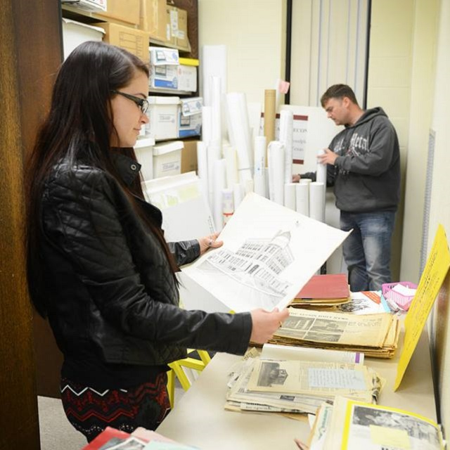
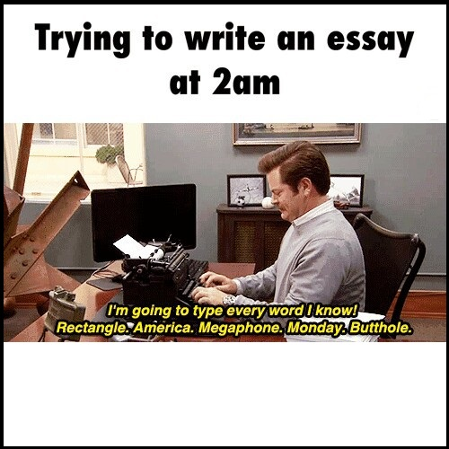
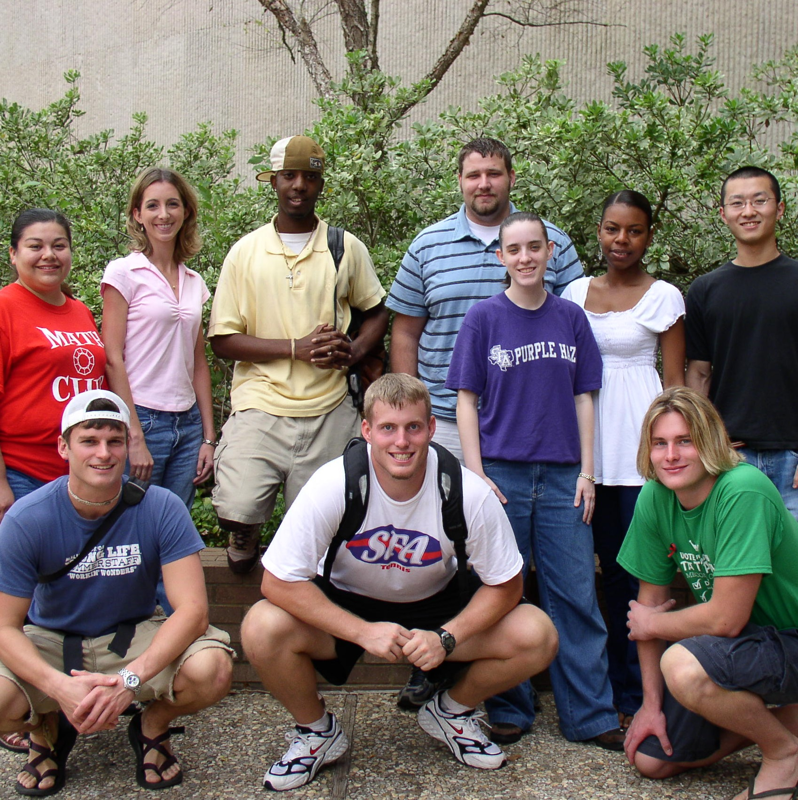

Written by Piero Pretto, SFA Graduate
It was painful to watch.
“Dude, I've been at the lib alllll dayyyy everyday,” he said. He slid his textbook towards me drenched in highlighter ink. “See, I've covered 50 pages today! I’m on a roll. And look, I also made like 400 flashcards.”
The floor around him was smothered in flashcards, empty Redline bottles and Taco Bell debris.
As academic chair of my fraternity, I had to tell my friend he was wasting his time. But I felt guilty. He clearly was working hard to make sure he was ready for finals. But he wasn’t.
“Stop,” I sighed. “Why aren’t you making outlines of the chapters? Cramming hundreds of pages of textbook material and flashcard terms in a few nights is a horrible way to study. You need to be able to recall the main ideas. Then work your way down from there.”
During my tenure as academic chair for Sigma Alpha Mu, this problem was rampant. No one teaches you how to learn in school. All you’re really told is to read, reread and reread the stuff you just reread. It’s called “studying.”
Last year, I came across an ebook “Study Less, Learn More” by Scott Young. I’m a huge nerd but I’m Forrest Gump compared to the author of this book. He actually earned a MIT degree in 12 months. Without ever going to class. True story; watch his TED talk on YouTube.
The book combines the author's own learning experience with almost all major theories and techniques in the field of productivity and personal development. He basically sought to learn as much as possible with the least amount of effort.
Here’s a few highlights from his book to help you hack any college major.
1) Arbitrary information – sets of facts, dates, definitions or rules that have no logical group
Examples: History, General Physics
Try to breathe life into these terms through the linking method. For instance, take the equation E=mc2. Image two MC’s (rappers) destroying the competition with ultra-fast lyrical stunts, getting the crowd energized. E = energized or in the physics realm, energy. mc2 = two rappers rapping really fast which works well for “c”, which means acceleration. Boom. Now you have a visual metaphor to latch on to when you see this formula.
2) Opinion – information in the form of theories
Examples: Philosophy, Research & Argument
Try the diagram method. Take out a large sheet of paper and create a web of ideas. For instance, take the concept of motivation. Motivation is linked to intrinsic motivation which is linked to rewarding behavior which is linked to staying up till 5 a.m. playing Call of Duty because that is linked to visual and audio stimulation which is linked to insane joy. You can create links for days. The more personal, the better.
3) Process Information – data that needs to be acted upon and remembered in sequence.
Example: Computer Science & Public Speaking
Pratice, practice, practice. This information is the hardest to cram because it’s a lot like dancing - it has to flow naturally if you’re going to master it. Trying practicing a little each day and watching others perform. Before I give a speech, I rehearse in front of a webcam several times, taking mental notes of unintended errors. Learning JavaScript has required long hours of smashing my head into my keyboard until the code stuck in my mind.
4) Concrete Information – basic concepts that become gradually abstract but are essentially tangible.
Example: Biology, Math in Society, Astronomy
Metaphors help with this stuff. When memorizing the Doppler effect, take special note of the images displayed in the textbook. Walk outside and experience the Doppler effect for yourself. How does the Doppler effect play a role in sports, in music or in social settings?
5) Abstract Information – information that lacks immediate connection with the senses
Example: Calculus, Quantum Physics, Bruce Jenner's sexual orientation
This information requires all strategies, including diagrams, metaphors and practice. But ultimately, it comes down to finding the core, concrete concepts in all of it. Write these down and work your way down from there.
Good luck with finals this semester. You can find Scott Young's book here.
HemiNotes helps SFA students share & compare class notes. Learn more »